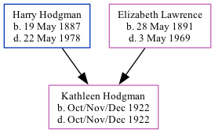

Kathleen C Hodgman 1922 - 1922
[ Home ] | [ Calendar ] | [ Surnames Index ] | [ Family History ]The child of Harry Hodgman (a farm houseman) and Elizabeth Lawrence, Kathleen Hodgman, the first cousin once-removed on the mother's side of Nigel Horne, was born in Eastry, Kent, England in Oct/nov/dec 19221,2.
She died on the same day2.
Parents
- Harry James was born on May 19, 1887
- Elizabeth Annie was born on May 28, 1891
Citations
- England & Wales, Birth Index: 1916-2005 Online publication - Provo, UT, USA: The Generations Network, Inc., 2008.Original data - General Register Office. England and Wales Civil Registration Indexes. London, England: General Register Office. © Crown copyright. Published by permission of the Cont
- England & Wales, Death Index: 1984-2005 Online publication - Provo, UT, USA: The Generations Network, Inc., 2007.Original data - General Register Office. England and Wales Civil Registration Indexes. London, England: General Register Office. © Crown copyright. Published by permission of the Cont
Family Tree
Generated by Ged2Site. Last updated on Jul 20, 2025